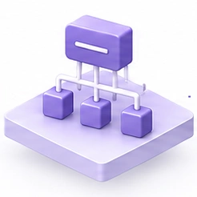
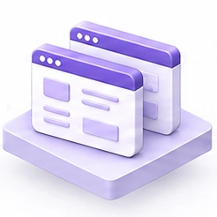
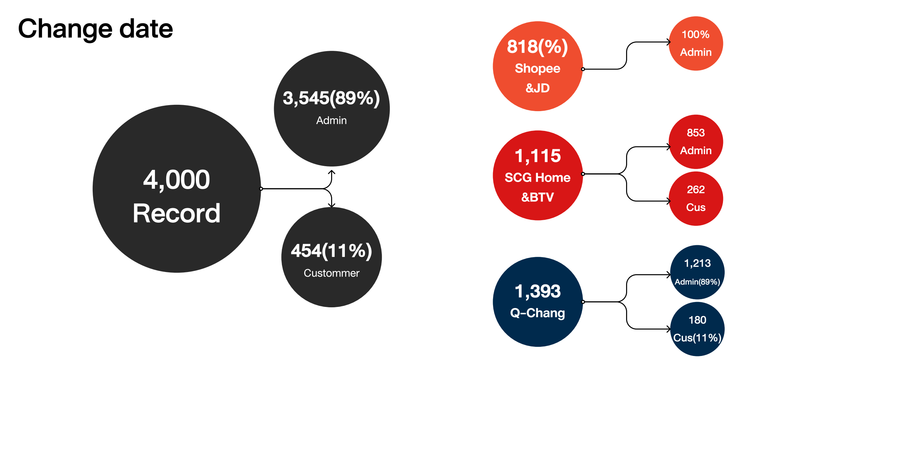
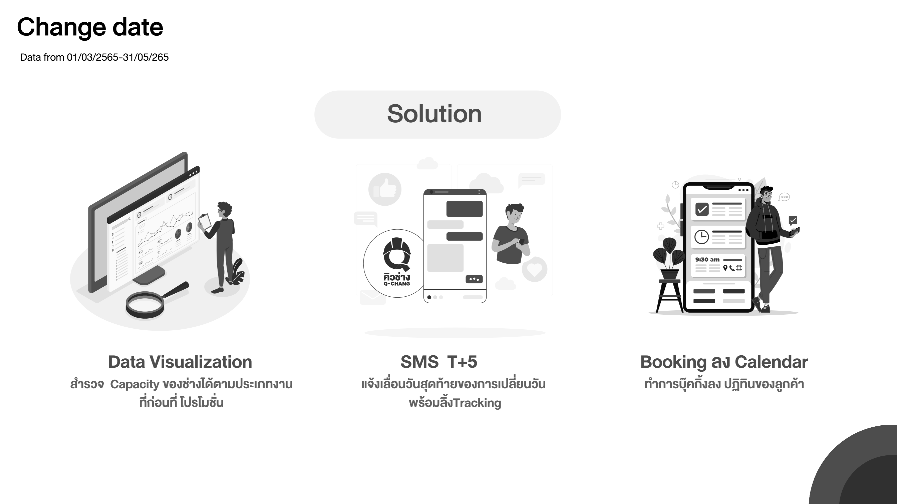
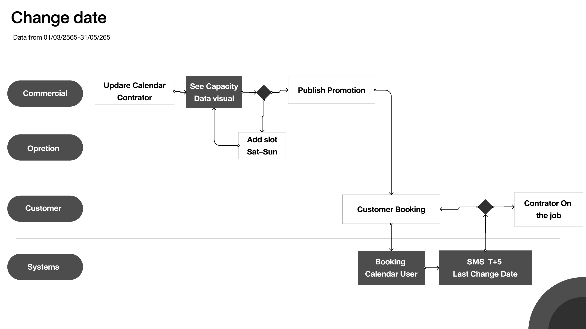

03 / 11
Q-CHANG / SERVICE DESIGN / 2022
Change Date
เปลี่ยนวันหนึ่งครั้ง หลายฝ่ายต้องขยับตาม
ทำให้บริการรับมือการเปลี่ยนวันได้ ผ่านตารางช่าง การประสานงาน และการเตรียมโปรโมชั่น
อ่านเคสนี้
ส่วนที่ฉันรับผิดชอบ
วิเคราะห์ข้อมูล · วาง flow · นำเสนอแนวทางบริการช่างในบ้าน · กรุงเทพฯ · บริบทช่วงโควิด
ฉันวิเคราะห์ข้อมูลและนำเสนอปัญหากับแนวทางให้หัวหน้างานใช้ประกอบการตัดสินใจ ส่วนวิธีดำเนินงานขึ้นอยู่กับหัวหน้างานและทีมที่เกี่ยวข้อง
กระบวนการทำงานของฉัน
จากข้อมูล สู่กรอบปัญหาที่ทีมแก้ต่อได้
8 ขั้นตอน ตั้งแต่สำรวจรายการเปลี่ยนวัน ไปจนถึงเสนอแนวทางให้ทีมตัดสินใจต่อ
เริ่มจากปัญหา
มีรายการเปลี่ยนวันจองบริการประมาณ 4,000 รายการ

แยกกลุ่มสาเหตุ
เหตุสุดวิสัย ปัญหาระบบ และพฤติกรรม

เลือกชุดข้อมูล
แยกตามช่องทางการขาย แล้วเลือกดูเว็บไซต์ของเราและ Partner platform

หาแพตเทิร์น
ดูรูปแบบที่เกิดซ้ำของวันจองและการเปลี่ยนวัน
พบสัญญาณโปรโมชั่น
พบวันจองที่ตรงกับวันจัดโปรโมชั่น จึงนำประเด็นนี้ไปสำรวจต่อ
นำเสนอข้อค้นพบ
สรุปแพตเทิร์นและประเด็นให้หัวหน้างานพิจารณา
สัมภาษณ์เพื่อเข้าใจ
คุยกับพนักงานภายในและลูกค้า เพื่อเติมบริบทเบื้องหลังตัวเลข
ตีกรอบปัญหา
ระบุปัญหาและเสนอแนวทางแก้ไข เพื่อให้ทีมตัดสินใจวิธีดำเนินงานต่อ
ประมาณ 4,000 หมายถึงข้อมูลจริง 3,999 รายการ ส่วนแพตเทิร์นโปรโมชั่นเป็นจุดสังเกตที่นำไปสำรวจต่อ ยังไม่ใช่ข้อพิสูจน์เชิงสาเหตุ
01 / สัญญาณจากข้อมูล
เกือบ 9 ใน 10 รายการเปลี่ยนวัน ผ่านเจ้าหน้าที่
ข้อมูลสามเดือนทำให้เห็นว่าการเปลี่ยนวันยังเดินผ่านคนมากเพียงใด จึงเป็นจุดเริ่มต้นให้ฉันย้อนดูงานประสานเบื้องหลังคำขอแต่ละครั้ง
ช่วงข้อมูล: มีนาคม–พฤษภาคม 2022
- ผ่านเจ้าหน้าที่
- 3,545 ≈ 89%
- ลูกค้าทำเอง
- 454 ≈ 11%
จำนวนจริง 3,999 รายการ นำเสนอต่อผู้บริหารเป็นประมาณ 4,000 เพื่อให้จดจำง่าย จำนวนนี้คือรายการ ไม่ใช่ลูกค้าไม่ซ้ำ และไม่ใช่เปอร์เซ็นต์ผลปรับปรุงหลังใช้งาน
02 / งานหลังการเปลี่ยนวัน
วันใหม่หนึ่งวัน อาจกลายเป็นงานต่อเนื่องหลายฝ่าย
หากช่างเดิมไม่ว่างตามวันใหม่ คำขอต้องผ่านการประสานหลายขั้น กว่าลูกค้าจะได้นัดหมายที่ทำงานได้จริงอีกครั้ง
- 01
ลูกค้า
ขอเปลี่ยนวันนัด
- 02
CS · บริการลูกค้า
ตรวจสอบคำขอ
- 03
ช่าง
ยืนยันวันที่ว่าง
- 04
IS · ประสานงาน
หาทีมทดแทน
- 05
ลูกค้า
ยืนยันนัดหมายอีกครั้ง
หากไม่มีทีมว่าง: ประสานเพิ่มเติม เสนอวันอื่น หรือดำเนินการคืนเงิน ภาพนี้ย่อจากกระบวนการเดิม ไม่ใช่ flow อัตโนมัติที่สร้างขึ้นใหม่
คำถามในการออกแบบ
ทำอย่างไรให้บริการรับมือการเปลี่ยนวันได้ ก่อนตัดสินใจเรียกค่าธรรมเนียม?
ฉันนำเสนอให้มองการเตรียมตัวร่วมกัน ทั้งช่างที่พร้อมรับงาน ความเข้าใจเงื่อนไข และเวลาที่พอประสานงาน โดยยังไม่มีข้อสรุปในเคสนี้ว่าผู้บริหารตัดสินใจเรื่องค่าธรรมเนียมอย่างไรในที่สุด
03 / ช่วงเวลา 5 วัน
แจ้งเตือนให้มีเวลาจัดการต่อ
เรามีสมมติฐานว่า SMS เตือนเข้ารับบริการในวันพรุ่งนี้ทำให้ลูกค้าบางส่วนนึกถึงนัด แล้วโทรขอเปลี่ยนในช่วงกระชั้นชิด
สมมติฐานในการทำงาน · ยังไม่ใช่ข้อพิสูจน์เชิงสาเหตุ
- ก่อนนัด 5 วัน
แนวทางแจ้งเตือนให้เร็วขึ้น
ให้เวลาทบทวนนัดและประสานการเปลี่ยนแปลง
- ก่อนนัด 1 วัน
เวลาแจ้งเตือนเดิม
อาจเป็นจุดที่ทำให้เกิดคำขอเปลี่ยนกระชั้นชิด
- วันเข้าบริการ
นัดหมายที่กำหนดไว้
ลูกค้าและช่างต้องมีแผนที่เข้าใจตรงกัน
5 วันเป็นช่วงเวลาประนีประนอมให้ลูกค้า ช่าง และแพลตฟอร์มประสานงานทัน ไม่ใช่ค่าที่ทดลองแล้วว่าดีที่สุด และไม่ใช่จำนวนวันที่ลูกค้าเลื่อนนัด ส่วนสถานะเปิดใช้ SMS รูปแบบนี้ยังไม่ได้ยืนยันในเคส
04 / สิ่งที่ทีมปรับ
สิ่งที่เปลี่ยนขยายไปถึงวิธีทำงานของทีม
การเปลี่ยนแปลงต่อไปนี้เป็นสิ่งที่ฉันจำได้ว่าเกิดขึ้นหลังงานวิเคราะห์ ฉันรับผิดชอบการวิเคราะห์และนำเสนอ ส่วนหัวหน้างานตัดสินใจวิธีดำเนินการ
CS + IS
สื่อสารผลกระทบด้วยแนวทางร่วมกัน
ทั้งสองทีมร่วมเขียนสคริปต์ตอบและดำเนินการเปลี่ยนวัน เพื่ออธิบายผลกระทบให้ลูกค้าและช่างเข้าใจ
การทำงานของช่าง
กติกาปฏิทินชัดและเข้มงวดขึ้น
มีการปรับระเบียบการเปิด–ปิดปฏิทินของช่างให้เข้มงวดขึ้น
MKT + ทีมที่ปรึกษาภาคสนาม
เตรียมช่างก่อนเริ่มโปรโมชั่น
MKT และ FC ร่วมเตรียมวันโปรโมชั่นกับความพร้อมช่าง โดย MKT ใช้กลุ่ม LINE แจ้งเตือนให้ช่างจัดการปฏิทินก่อนเริ่มโปรโมชั่นจริง
ONBOARDING ช่าง
อธิบายการจัดการปฏิทินตั้งแต่เริ่ม
เพิ่มเนื้อหา onboarding ให้ช่างเข้าใจวิธีเปิด–ปิดปฏิทินและความหมายของการระบุวันที่รับงานได้
05 / สิ่งที่ได้เรียนรู้
โจทย์ฟีเจอร์เปิดทางให้คุยเรื่องบริการทั้งกระบวนการ
คุณค่าของงานฉันอยู่ที่การทำให้ปัญหาประสานงานมองเห็นชัดพอที่ทีมจะนำไปตัดสินใจต่อ ฉันได้เรียนรู้การเชื่อมคำขอของลูกค้ากับข้อจำกัดหน้างาน รวมถึงระบุให้ตรงว่าส่วนไหนคือคำแนะนำของฉัน และส่วนไหนคือการตัดสินใจของทีม
จากเอกสารวิจัยต้นฉบับ
ภาพจากการนำเสนอเดิม ใช้อ้างอิงข้อมูลและแนวทางที่เสนอ ไม่ใช่หลักฐานว่าทุกส่วนพัฒนาเสร็จแล้ว

เปิดภาพต้นฉบับเต็มขนาด ↗
เปิดภาพต้นฉบับเต็มขนาด ↗
เปิดภาพต้นฉบับเต็มขนาด ↗ที่มา: เอกสารนำเสนอ Frame 35 หน้า 3, 17 และ 18 สไลด์เดิมใช้คำว่า T+5; timeline ด้านบนใช้คำอธิบายเวลาโดยตรงเพื่อไม่ให้สับสน ผลงานของทีมและขอบเขตบทบาทอ้างอิงคำบอกเล่าของฉัน